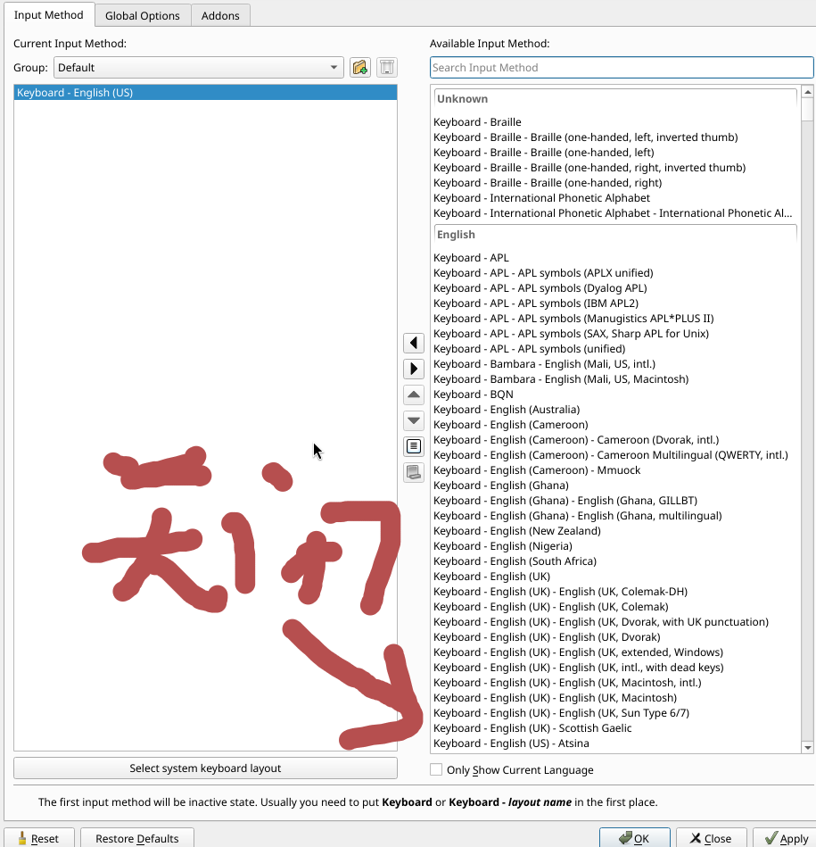
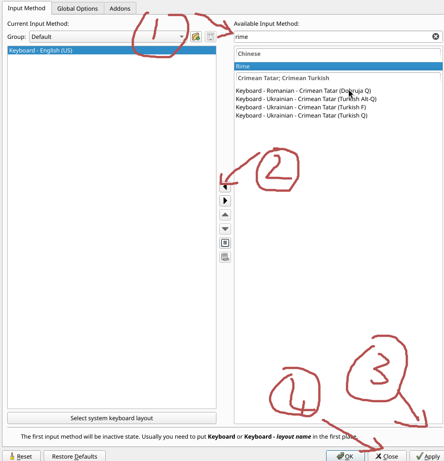
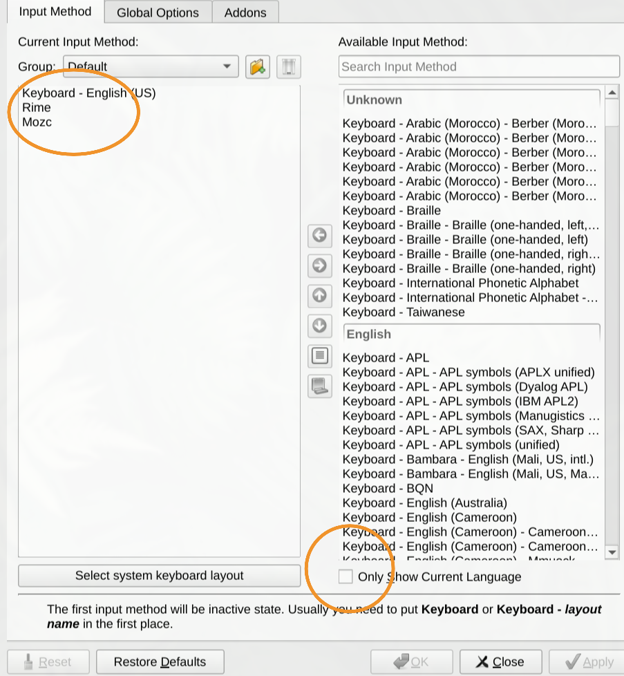
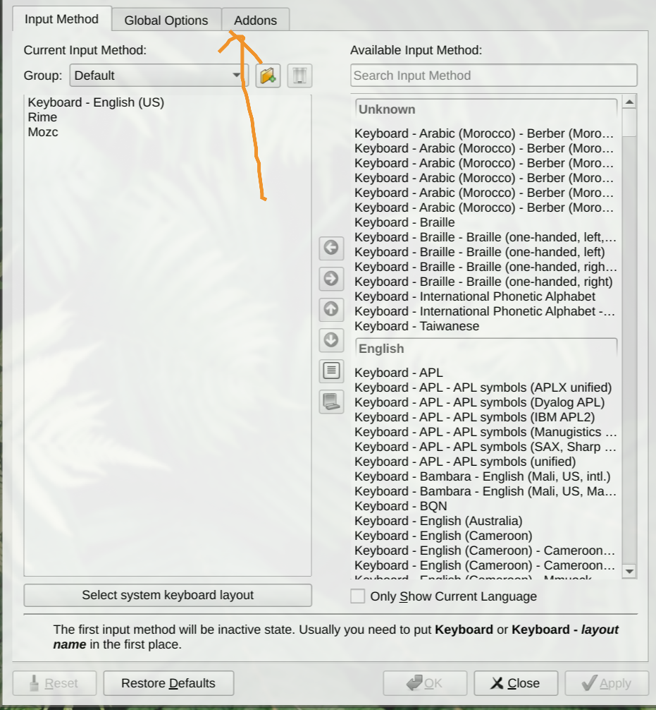
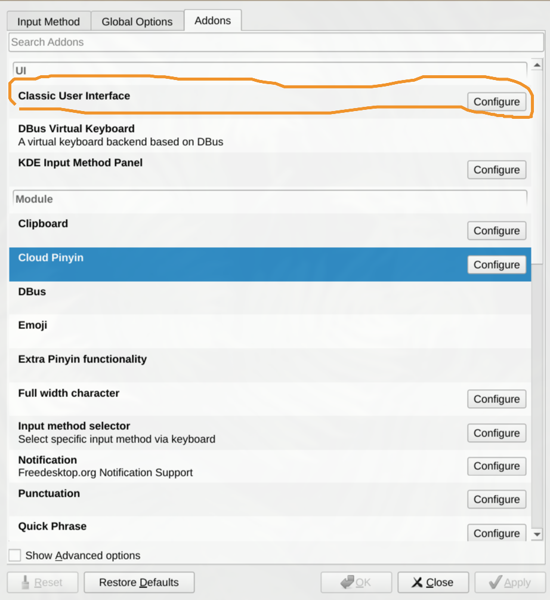
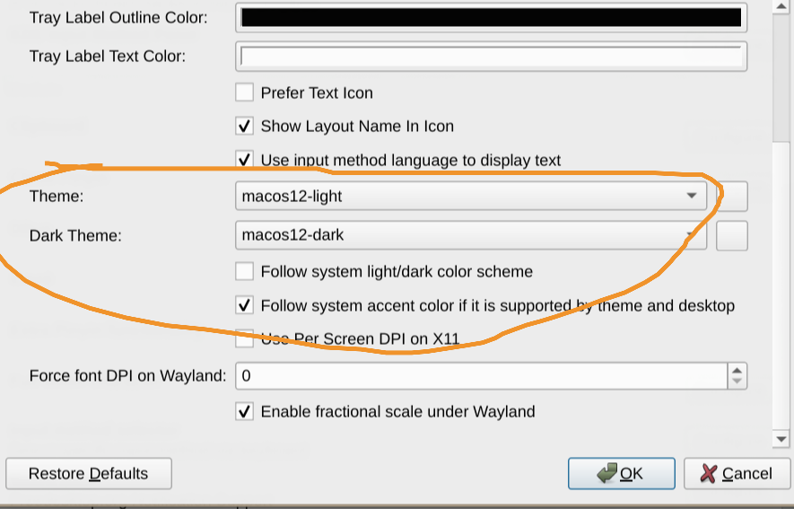

安装及配置输入法框架
安装输入法框架
目前一共有两种选择Fcitx5和Ibus，这里推荐使用更现代，轻量Fcitx5
# 中文
# Fcitx5
sudo pacman -S fcitx5 fcitx5-chinese-addons fcitx5-gtk fcitx5-qt fcitx5-configtool
# Ibus
sudo pacman -S ibus ibus-rime
# 日语
# Fcitx5
sudo pacman -S fcitx5 fcitx5-mozc fcitx5-gtk fcitx5-qt fcitx5-configtool
# Ibus
sudo pacman -S ibus ibus-mozc
设置环境变量
编辑 ~/.pam_environment（全局）或 ~/.xprofile（仅X/Wayland）
# Fcitx5
export GTK_IM_MODULE=fcitx5
export QT_IM_MODULE=fcitx5
export XMODIFIERS=@im=fcitx5
# IBus
export GTK_IM_MODULE=ibus
export QT_IM_MODULE=ibus
export XMODIFIERS=@im=ibus
安装输入法
在终端执行
# Fcitx5
fcitx5-configtool
# Ibus
ibus-setup
进入软件后添加 Rime（中文）和 Mozc（日语）输入法



安装字体
中文字体
sudo pacman -S adobe-source-han-sans-cn-fonts
可选的字体有
- adobe-source-han-sans-cn-fonts
- adobe-source-han-serif-cn-fonts
- noto-fonts-cjk
- wqy-microhei
- wqy-microhei-lite
- wqy-bitmapfont
- wqy-zenhei
- ttf-arphic-ukai
- ttf-arphic-uming
日语字体
sudo pacman -S adobe-source-han-sans-jp-fonts
可选的字体有
- adobe-source-han-sans-jp-fonts
- adobe-source-han-serif-jp-fonts
- noto-fonts-cjk
- otf-ipafont
- otf-ipaexfont
- ttf-hanazono
- ttf-jigmo
- ttf-sazanami
- ttf-koruriAUR
- ttf-monapoAUR
- ttf-mplus-gitAUR
- ttf-vlgothic
- ttf-kanjistrokeordersAUR
中文输入法优化
安装框架
中文输入合集 fcitx5-chinese-addons 功能过于简陋
推荐这两种方案：万象 雾凇
全拼推荐使用雾凇，双拼推荐使用万象
# 雾凇
sudo pacman -S fcitx5-rime rime-ice-git
# 万象
sudo pacman -S rime-wanxiang-pinyin rime-wanxiang-flypy
# 如果你用五笔
sudo pacman -S rime-wubi
安装好后，打开 fcitx5-configtool 添加 rime 到输入法列表中，完成后重启输入法。
修改默认输入方案
下面我们编辑配置配置文件将默认输入方案改成雾凇拼音
# 编辑配置文件启用 RIME 雾凇拼音
mkdir -p ~/.local/share/fcitx5/rime
vim ~/.local/share/fcitx5/rime/default.custom.yaml
写入以下内容设置 rime 的默认方案为雾凇拼音：
patch:
# 这里的 rime_ice_suggestion 为雾凇方案的默认预设
__include: rime_ice_suggestion:/
重启输入法之后默认输入方案就变成雾凇拼音了
配置输入法模型
推荐给雾凇拼音接入万象的语法模型，可以提高长句联想效果
https://github.com/amzxyz/RIME-LMDG/releases/download/LTS/wanxiang-lts-zh-hans.gram
# 安装模型
# 直接从 AUR 或者 archlinuxcn 安装 或者从 GitHub 手动下载,下载完成后把模型放在 ~/.local/share/fcitx5/rime/。
yay -S rime-wanxiang-gram-zh-hans
# 编辑雾凇拼音的配置文件
vim ~/.local/share/fcitx5/rime/rime_ice.custom.yaml
写入下面内容
patch:
grammar/language": wanxiang-lts-zh-hans
重新启动输入法即可生效
安装输入法皮肤
浏览器搜索 fcitx5 themes，下载自己喜欢的主题, 放到 ~/.local/share/fcitx5/themes 目录下。
当然也可以在 archlinux 的 aur 中搜索，找自己喜欢的主题
例如我要使用macos主题
yay -S fcitx5-theme-macos12
下载好后在fcitx5的addons中选择UI栏中的 Classic User Interface, 更改theme你下载的主题



💬 评论